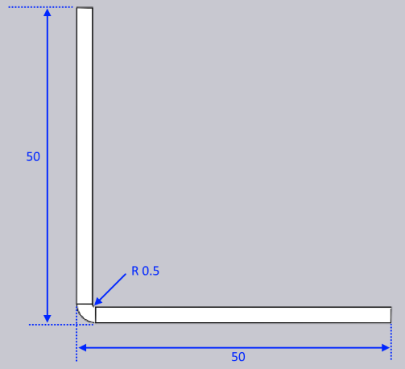

自适应几何特征
本文档说明了自适应几何特征可用的三种不同处理选项:

当输入零件与实际工艺条件不匹配时,将调用自适应几何功能。零件可能存在以下一个或两个问题:
-
弯曲的内半径可能太小。每个工艺(如面板折弯或 压力制动空气折弯)都会有该工艺可能达到的最小内半径。 如果零件的设计半径小于此值,则无法按设计制造零件; 需要更改半径。
-
弯曲线的K-factor可能不正确。工艺机器(面板折弯机与 压力制动机)以及工艺工具或条件(冲头/模具/折叠刀片/空气间隙)都会 结合起来决定弯曲的实际K-factor。弯曲可能是用 不同的K-factor设计的。[1]
让我们以一个同时具有不正确半径和不正确K-factor的简单2-D零件为例, 看看自适应几何功能如何修改此零件。

上面显示了输入的2D零件 - 这是一个简单的矩形,正中间有一条弯曲线。 零件宽度为96.75毫米。材料厚度为2.5毫米
弯曲线的_设计_内半径为0.5,K-factor为0.5。 因此平面宽度(中性线的长度)为:
角度 * (内半径 + k因子 * 厚度) = PI/2 * (0.5 + 0.5 * 2.5) = 2.75 毫米
由于这是90度弯曲,因此弯曲扣除值很简单:
2 * 厚度 - 平面宽度 = 2 * 3 - 2.75 = 3.25 毫米
不改变任何内容
在_没有任何自适应几何_处理的情况下折叠时,这将创建具有以下尺寸的零件:

这也正是我们使用 不改变任何内容 选项获得的结果。 K-factor和半径都没有改变,导致3D零件与2D图纸的设计意图完全匹配。 如果将此设置用于制造,则生成的制造零件实际上不会与这些尺寸匹配, 主要是因为机器上产生的弯曲在半径和有效K-factor方面都会与 设计的弯曲有所不同。在这种情况下,制造后您将得到一个略小于50x50的零件。
保留平面尺寸
如果选择此选项,TecZone将保持平面尺寸不变,但会使用正确的弯曲半径和 K-factor对弯曲线进行注释。假设正确的弯曲半径为2.5毫米, K-Factor为0.46毫米。现在零件将首先在内部更改为:

请注意整体零件尺寸保持不变(仍为96.75毫米),并且弯曲线的位置 保持不变。但是,弯曲现在的半径为2.5,K-factor为0.46,这意味着 弯曲的平面宽度增加到5.73。现在将其折叠以得到以下结果:

如您所见,零件的2D尺寸保持不变,但3-D尺寸已 更改为50.51 x 50.51(从初始设计尺寸50 x 50)。
保留3-D尺寸
如果选择此选项,则零件的3D尺寸保持不变,但由于弯曲半径和 K-factor发生了变化,展开的零件将发生变化。从2-D平面开始时 (如本例所示),TecZone遵循以下步骤。
-
使用半径和K-Factor的初始设计意图将模型折叠为3D。这将 产生一个与图2中的模型看起来相同的3D模型。
-
现在,将半径更改为目标半径2.5毫米,将K-factor更改为目标值 0.46。这将产生一个如下所示的3D模型:

-
然后展开此模型(对弯曲使用K-factor 0.46),以得到以下平面:

使用此选项,3D尺寸保持在设计尺寸50x50。 展开的零件宽度已从96.75更改为95.73毫米。
摘要
-
如果尚未生产平面,最佳选项通常是 保留3-D尺寸
-
如果已生产平面且无法修改,最佳选项是 保留平面尺寸
这两个选项都将导致最终制造结果应与TecZone窗口中看到的3D数据匹配的零件。 相反,不改变任何内容 选项将导致最终制造的零件_不会_与TecZone中看到的3D数据匹配, 因为实际弯曲半径和K-factor在设计中未正确建模。